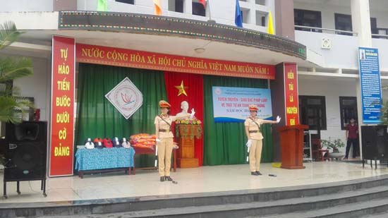
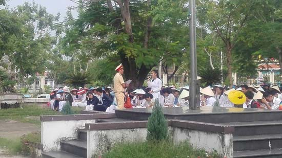

Sinh hoạt tuyên truyền giáo dục pháp luật về trật tự An toàn giao thông năm học 2017 - 2018

Lần cập nhật cuối lúc Thứ năm, 02 Tháng 11 2017 10:41 Viết bởi Administrator Thứ hai, 23 Tháng 10 2017 00:00
Sáng ngày 23/10, Nhà trường đã phối hợp với Phòng PC 67 Cảnh sát giao thông Công an Tỉnh Quảng Nam tổ chức buổi tuyên truyền giáo dục pháp luật về trật tự an toàn giao thông cho học sinh toàn trường.
Buổi tuyên truyền đã được tổ chức dưới nhiều hình thức như: tiểu phẩm, văn nghệ, phổ biến luật giao thông đường bộ, trưng bày tranh ảnh về an toàn giao thông. Cũng trong buổi tuyên truyền các chiến sĩ Phòng PC 67 đã tặng nhiều mũ bảo hiểm và áo phao cho các bạn học sinh Nhà trường.


Tin mới hơn:
- 29/12/2017 09:43 - Nghiên cứu sinh Phạm Thị Huyền – Phó Hiệu trưởng b…
- 17/12/2017 20:58 - Trường THPT chuyên Nguyễn Bỉnh Khiêm và Trường Đại…
- 02/12/2017 08:21 - KỶ NIỆM 35 NĂM NGÀY NHÀ GIÁO VIỆT NAM 20-11 THPT C…
- 24/11/2017 07:41 - Phát động tham gia hưởng ứng Cuộc thi Những tấm gư…
- 26/10/2017 00:00 - Đại hội Đại biểu Đoàn TNCS trường THPT Chuyên Nguy…
Tin cũ hơn:
- 26/09/2017 08:30 - Đề cương tuyên truyền Đại hội Đoàn TNCS Hồ Chí Min…
- 26/09/2017 08:22 - Tài liệu chuyên đề học tập tư tưởng, đạo đức, phon…
- 23/08/2017 07:59 - Bài hát Vang danh ngôi trường chuyên Nguyễn Bỉnh K…
- 18/08/2017 07:44 - Cuộc thi Tìm hiểu pháp luật trực tuyến trên mạng I…
- 06/07/2017 15:55 - Hướng dẫn tra cứu điểm thi và phúc khảo bài thi và…